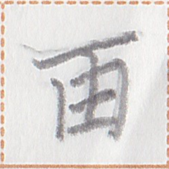

【果】
tua1
【果】
tua1
styles / 式样 / 様式

bitmap
位图
ビットマップ
網墨倉字
【網墨倉字】

cursive
行草书
行草書
風字
【風字】

geometric
几何图形的
幾何学的
軟型倉刀字
【軟型倉刀字】
果
rounded
圆体
丸ゴシック
骨軸倉字
【骨軸倉字】
rounded
圆体
丸ゴシック
骨軸倉字
【骨軸倉字】
dismantling / 拆分 / 分割
variants / 异体字 / 異体字
- 【菓】
occurrences / 出现次数 / 出現回数 : 27
Show all occurrences / 显示所有出现 / 全ての出現例を表示
此処之天風善於生行果別而無善於生行米。
ka1 hue a syt2 pua2 kait ie ian1 mok1 tua1 pau1 ua mun1 kait ie ian1 mok1 mo1.
The climate here is favorable for growing fruits, but not for growing rice. / 这里的气候有利于种植水果，但不适合种植水稻。
口果之時我之犬心善。
iam1 tua1 a kak pai2 a pa2 hia1 kait.
My dog is happy when he eats fruit. / 我的狗吃水果的时候很开心。
木処足行之時我等目果木。
hup1 hue xi1 mok1 a kak pai2 ge ta1 tua1 hup1.
We saw a fruit tree while walking in the forest. / 我们在森林里散步时看到果树。
Words containing this character / 包含这个磷字的词语 / この燐字を含む語 :
| tua1 | 果 | noun | fruit | ||
| kan1 tua1 | 火果 | noun | apple | ||
| kit1 tua1 | 百果 | place word | Keettwa (a large city in the Ai'ren Republic, located in Taupo Province) | ||
| tua1 nua2 | 果水 | noun | juice, fruit juice | ||
| tua1 hup1 | 果木 | noun | fruit tree | ||
| tua1 bait | 果膠 | noun | fruit jam | ||
| kan1 tua1 hup1 | 火果木 | noun | apple tree |